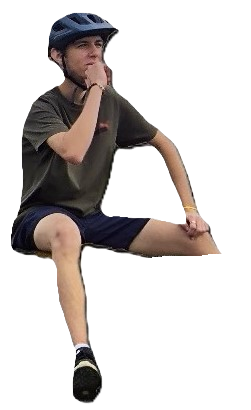
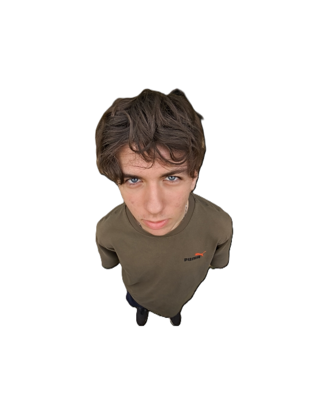

Wikipeople est une plateforme collaborative dédiée à la création de d'une base de donné pour les personnes de notre entourage. Sur Wikipeople, vous pouvez trouver des biographies couvrant une variété de domaines. Chaque biographie est rédigée par des contributeurs passionnés qui s'efforcent de fournir des informations fiables et vérifiables.

